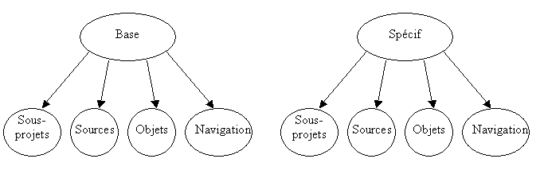

Afin de pouvoir surcharger plusieurs fois le même projet (pour chaque installation du logiciel), il est conseillé d’organiser les répertoires de la manière suivante :
Répertoires communs à toutes les surcharges
Le projet de base est installé dans des répertoires qui pourront être partagés par toutes les surcharges.
Répertoire des fichiers projets et sous projets
Répertoire des sources non modifiés
Répertoire des objets
Répertoire des fichiers de navigation
Répertoires spécifiques à chaque surcharge
Pour chaque surcharge, vous allez créer quatre répertoires dans lesquels se trouveront uniquement les fichiers spécifiques de chaque installation :
Répertoire des sous-projets de surcharge
Répertoire des sources modifiés
Répertoire des objets compilés depuis le projet surchargé
Répertoire des fichiers de navigation créés depuis le projet surchargé.
En procédant ainsi, pour chaque installation (verticalisation) vous aurez toutes vos modifications dans des répertoires séparés.
